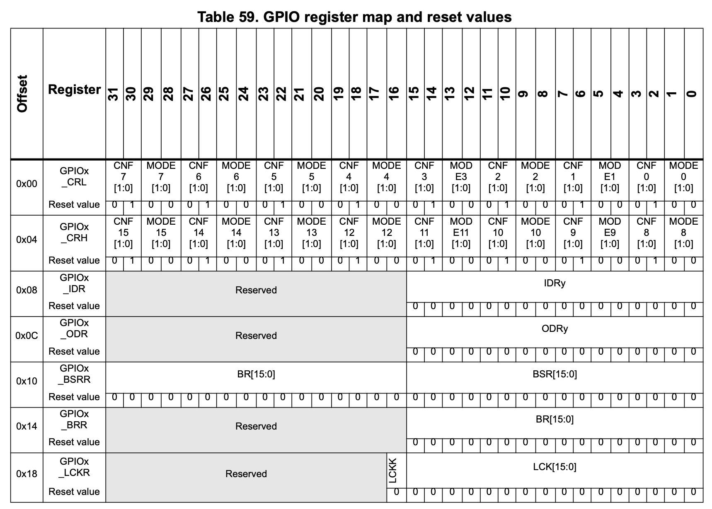

Documentation about the project.
Provides link to documentation of different section of the project.
The rest of the documentation can be found in the docs/ folder.
Git submodule of the official FreeRTOS repository
Practical examples on how to setup QEMU and FreeRTOS are located in Demo/
Practical Projects on QEMU and FreeRTOS are present in Projects/
The folder MemMang/ contain a custom memory management library
The test for the custom library is present in Test/
QEMU is an open-source emulator that allows to run virtual machines and emulate various architectures.
sudo apt upgrade && sudo apt update
sudo apt install qemu-system
qemu-system-arm -machine [machine] -cpu [cpu] -kernel [kernel]
FreeRTOS is a Real-Time Operating Sistem
The kernel source code should be included in the project to use the OS
Essential files to be included
task.cqueue.clist.cport.cheap_x.cFreeRTOSConfig.hHardware Abstraction Layer Library provided by STM
HAL_GPIO_TogglePin(GPIOA, GPIO_PIN_5);
The LED is connect to pin nuber 5 of the GPIO A port

void HAL_GPIO_TogglePin(GPIO_TypeDef *GPIOx, uint16_t GPIO_Pin)
{
uint32_t odr;
/* Check the parameters */
assert_param(IS_GPIO_PIN(GPIO_Pin));
/* get current Output Data Register value */
odr = GPIOx->ODR;
/* Set selected pins that were at low level, and reset
ones that were high */
GPIOx->BSRR =
((odr & GPIO_Pin) << GPIO_NUMBER) | (~odr & GPIO_Pin);
}
Demonstrate how the scheduler works with different configurations
ProjectConfig.h
#ifndef PROJECT_CONFIG_H
#define PROJECT_CONFIG_H
/*-----------------------------------------------------------
* Configuration parameters for the project.
* Change them in order to experiment different behaviours of
* the scheduler
*----------------------------------------------------------*/
#define USE_PREEMPTION 1
#define PRIORITY_TASK_1 2
#define PRIORITY_TASK_2 2
#define TASK_1_DELAY_ENABLE 1
#define TASK_2_DELAY_ENABLE 1
#define TASK_1_DELAY_VALUE 1000
#define TASK_2_DELAY_VALUE 1000
#endif
Different configurations:
Designed to show how some FreeRTOS features work and how tasks can be synchronized and communicate with each other.